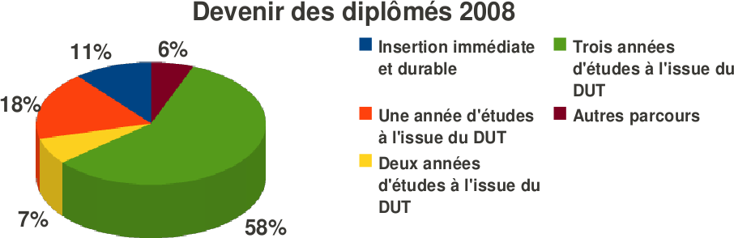
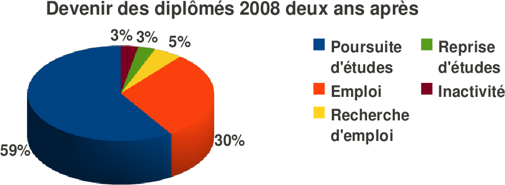

La formation GEII apporte des compétences en automatisme,
en électronique, en électrotechnique, en informatique
industrielle et en réseaux.
Elle offre également une
orientation originale : Electronique pour L'Audiovisuel,
permettant d'étudier les procédés utilisés
en multimédia.
Une fois son diplôme obtenu,
l'étudiant peut s'insérer directement dans la vie
active ou poursuivre ses études.
• Métiers: Automaticien, Assistant ingénieur
en génie électrique, Développeur de logiciels,
Informaticien industriel, Electronicien, Electricien, Technicien
audiovisuel, Technico-commercial, ...
• Les secteurs:
les industries de production et de fabrication, les transports,
l'automobile, l'agro-alimentaire, les sociétés de
services informatiques, la médecine,les bureaux d'études,...
Licence professionnelle
Licence générale + Master
École d'ingénieurs (ESSTIN, INSA, ENSPS, Polytech', UTBM, ...)
Formation double compétence...
1800 heures d’enseignement encadré, 330 heures de
projet, sur 4 semestres
• Formation scientifique et
humaine (465h):
Mathématiques
Expression et communication
Connaissance de l’entreprise
Anglais
• Composants, systèmes et applications (720h):
Energie
Systèmes d'information numérique
Systèmes électroniques
Informatique embarquée
Automatisme
Réseaux
• Innovation par la technologie et les projets (615h):
Outils logiciels
Etudes et réalisations d'ensembles pluritechnologiques
Gestion de projets
Projet personnel et professionnel
• Mise en situation professionnelle (330h):
Projet tuteuré
Stage en entreprise (10 semaines au moins)
Tous type de bac ou équivalence (DAEU)
Admission sur
dossier


75%
des empois occupés avec le DUT seul sont des CDI
Moyenne
du salaire net mensuel avec le DUT seul : 1512€
Service Scolarité
tél. 03 29 53 60 60 -
fax. 03 29 53 60 14
iutsd-scolarite-contact@univ-lorraine.fr